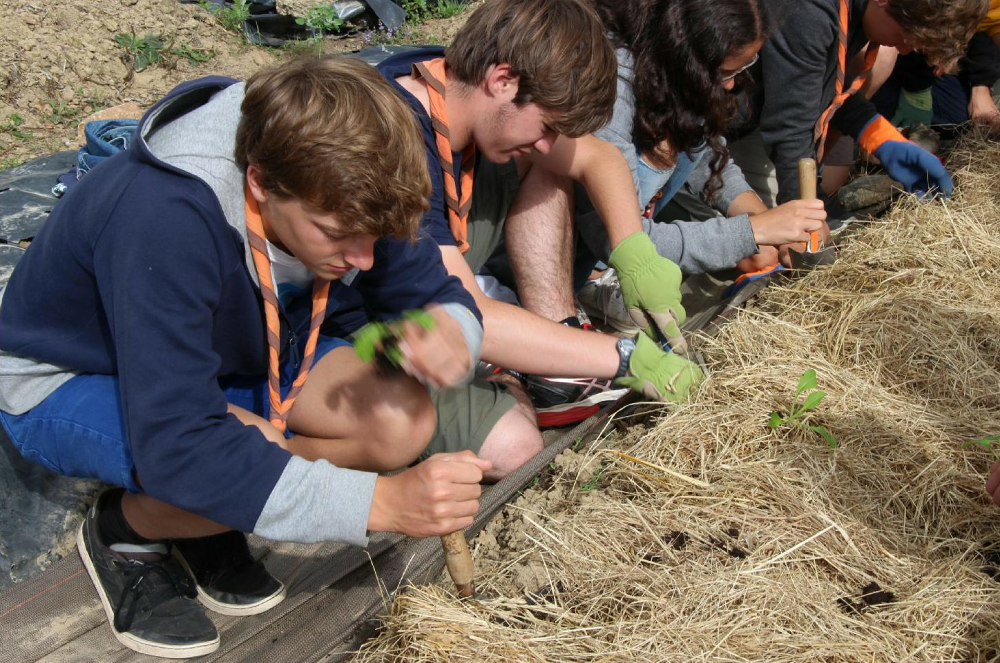

Nous contacter si intéressé.
Sur votre chemin de vacances vers la mer, ou pour le Puy du Fou, n'hésitez pas à venir visiter, faire le plein de légumes, d'air frais, et même séjourner. On a fait des travaux (chambre, studio, ...) pour pouvoir accueillir plus facilement. Et il y a toujours aussi moyen de camper.
On a accueille volontiers les camps scouts. Permaculture, ferme bio, récoltes de tomates et pommes de terre sont souvent une belle découverte pour les jeunes.
Extrait de Wikipedia sur François d'Assise :"François est le patron notamment des louveteaux (branche réservée aux jeunes enfants) au sein des mouvements de scoutisme catholiques, ainsi que celui des animaux, probablement par référence au miracle du « Loup de Gubbio » mais surtout pour le regard plein d'amour et de contemplation de l'œuvre de Dieu que portait saint François sur la nature (Cantique des Créatures…). À son exemple, suivant l'article 6 de la loi scoute, les scouts sont invités à découvrir dans la nature « l'œuvre de Dieu » et à la considérer en conséquence (connaissance de la nature, respect…)."